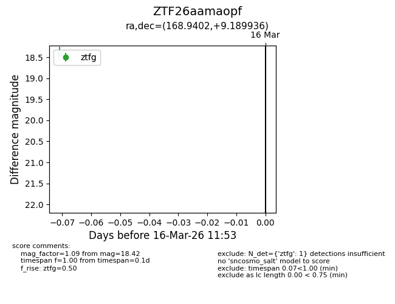
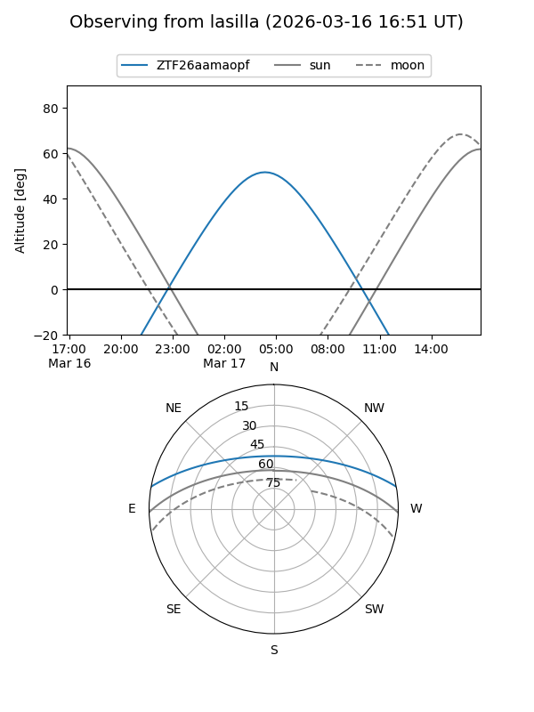
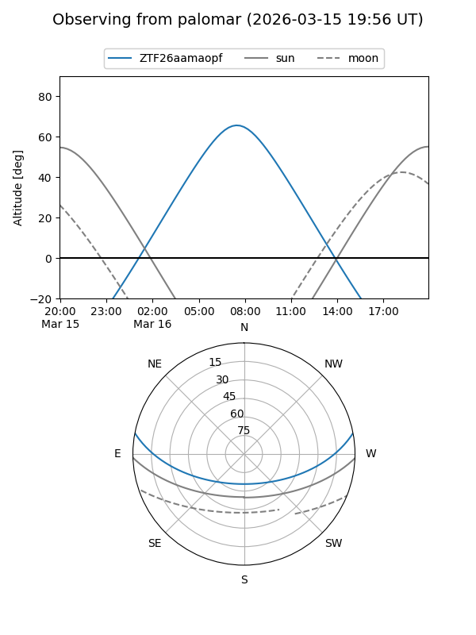

ZTF26aamaopf
Target ZTF26aamaopf at 2026-03-16 11:55
Aliases and brokers:
FINK: link
Lasair: link
ALeRCE: link
alt names
ZTF26aamaopf (ztf,fink_ztf)
Coordinates:
equatorial (ra, dec) = 168.9402,+9.18994
equatorial (HMS+DMS) = 11:15:45.64,+09:11:23.77
galactic (l, b) = (246.8695,+61.15586)
Flags:
Photometry:
last ztfg=18.42
1 ztfg detections
Lightcurve

Visibility


Additional plots